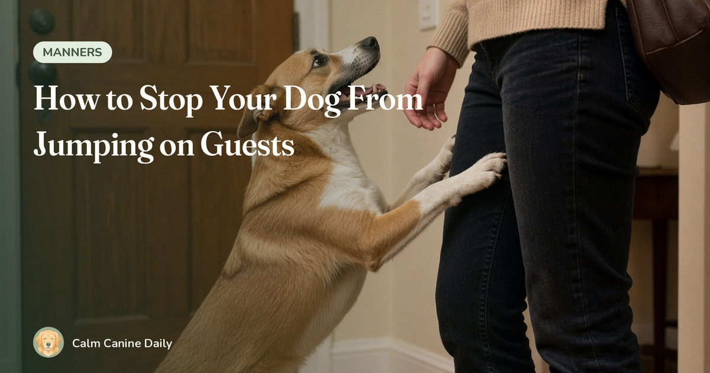

How to Stop Your Dog From Jumping on Guests

Here is how to stop a dog jumping on guests. Your dog isn’t being rude. Jumping is a greeting that got rewarded — with eye contact, talking, laughter, or even a gentle push that still felt like attention.
The fix is not a louder “down.” It is a clearer hello: four paws on the floor, then the petting starts. Practice it before a real guest is standing in your hallway.
Educational content only. Some links on this page are affiliate links. If you purchase through one, we may earn a commission at no extra cost to you. We do not impersonate or speak for any course creator.
About this article. Educational tips from Calm Canine Daily for everyday US owners. This is not veterinary advice, a diagnosis, or a guaranteed result. We are not a certified training practice and we do not claim CPDT or DVM credentials. If you are worried about a bite risk or a situation you cannot manage safely, pause and get qualified in-person help.
Key takeaways
- Jumping continues because it works as a greeting. Looking down, talking, or pushing can still count as a payoff.
- Wait for four paws on the floor, reward at chest or hip height, and have guests follow the same rule.
- If paws come up, turn away, pause, and reset. Don’t negotiate mid-jump.
- Practice with the door and with family first. The dinner guest is a hard test, not a first lesson.
In this article
- Why jumping keeps working
- What not to do
- The 10-second reset
- How to practice (without a real guest)
- Coaching actual visitors
- When to get extra help
- FAQ
Why jumping keeps working
Most dogs jump because it is an efficient way to get to our faces and hands. Puppies are often laughed at for it. Adult dogs who still jump have usually been paid, even accidentally: a “no, no, off,” a grab at the collar, or a guest who pets them in the air “just this once.”
Excitement at the door makes the habit stickier. The doorbell, keys, and the first ten seconds after you walk in are all high-arousal moments. If jumping is how “someone’s home” has always felt, you will need a new script for those seconds — and you will need everyone in the house to use it.
This is not a manners lecture for your dog. It is a payment problem. You are going to pay four paws, and you are going to stop paying the jump.
What not to do
Don’t knee, pinch, or step on toes. Those moves can frighten a dog, can be unsafe, and can still feel like a chaotic greeting. We don’t use them.
Don’t push down and keep talking into their face. You have just held a conversation with the jumper.
Don’t ask for a sit you cannot protect. If a sit falls apart the moment a guest leans in, you asked for too much too soon. Four paws on the floor is enough of a starting criterion. A sit can come later, in easier practice.
Don’t practice only when the real guest arrives. That is like rehearsing a play on opening night.
The 10-second reset
This is the “Calm Hello” from Day 2 of the free checklist.
- Set up for success. Keep a small jar of treats by the door, high enough that your dog cannot self-serve. A leash left near the door can help you gently prevent a rehearsal without turning the arrival into a wrestle.
- When your dog approaches, wait. No petting, no high-pitched hello, no pushing, while paws are on you.
- The instant all four paws are on the floor, pay. A treat at hip or chest height (not over their head, which can lure a jump), or a quiet scratch at the chest. Keep your voice low.
- If jumping starts, turn away. Pause. The greeting ended. When paws land, try again. You are not angry. You are clear.
- Guests pet only after four paws have stayed down for a few seconds. If the dog pops back up, the petting stops and the person turns away.
Ten seconds is a generous name for it. The first clean pause may last one or two seconds. That still counts. Lengthen the pause slowly.
If your dog is so amped they cannot think, add management: a baby gate between the entry and the rest of the house, or a leash so they can see the guest but cannot rehearse the jump, while you pay four paws behind the gate. Then let them closer.
How to practice (without a real guest)
Put your hand on the doorknob. Open and close the door. Step outside and come back in as if you were a visitor. Wait for four paws, pay, leave, repeat. Do this when no one is expected, for two or three minutes at a time.
Then add a family member who can follow the script. Then add a knock. Then a doorbell recording at a low volume, if the real bell is too much. Only then use a willing, coached friend.
After you come home from work, use the same boring entrance. Put a few treats in your pocket or in the car so you can pay four paws before you drop the bags and turn into an excited reunion. The first thirty seconds after you walk in are training, whether you mean them to be or not.
Coaching actual visitors
People who love dogs will undo your work with one cheerful “it’s okay, I don’t mind!” You need a line they can follow in the doorway.
Try: “We’re practicing four paws on the floor. Please ignore him until I say hello, then pet his chest.” Hand them a treat from the jar if they are willing, or ask them to wait while you pay the dog.
If a visitor cannot wait, keep the dog behind a gate, let people come in and settle, then bring your dog out on a leash for a calmer hello. That is not antisocial. That is hospitality that works for the dog too.
When to get extra help
If jumping includes mouthing that is getting harder, snapping, or fear (a dog who jumps and then shrinks, hides, or growls), stop casual practice and talk to a veterinarian or a qualified behavior professional. Children and unsteady adults should not be used as practice helpers for a large, unpracticed jumper — use management first.
FAQ
Should I teach “sit for greeting” right away?
A sit is a lovely later goal. If the sit keeps breaking, pay four paws first. Stability before cute.
What if they only jump on guests, not on me?
Guests are more exciting and less consistent. Practice the door with family, then use a gate and a script so guests do not accidentally pay the jump.
Will they grow out of it?
Some puppies jump less as they mature, but a well-paid habit can last. It is kinder to teach the new hello now than to wait.
Is turning away “mean”?
No. You are ending a game that doesn’t work, then paying the one that does. The petting still happens. It just happens with paws down.